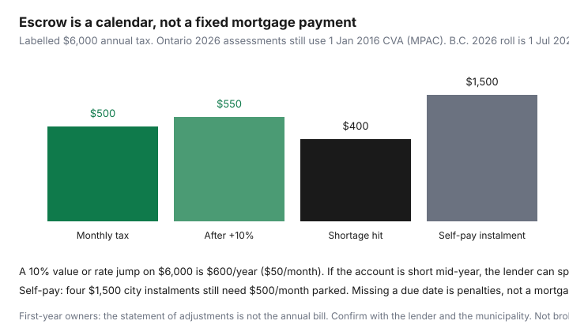

Housing · Canada
Property tax on a Canadian mortgage: escrow vs paying yourself and avoiding surprises
New owners treat the mortgage payment screenshot as the shelter number, then open a letter that says the tax portion is short. Escrow is not a fee the bank invented to annoy you. It is a holding account for a municipal bill that arrives on a calendar the lender does not control. When the bill changes, the payment changes — sometimes mid-year, sometimes with a catch-up that feels like a second closing.
Ontario 2026 assessments remain 1 January 2016 current value unless the property changed (MPAC). B.C.’s 2026 roll is a 1 July 2025 value. Frozen Ontario CVA does not freeze municipal rates. A labelled $6,000 annual bill is the working example below — replace it with your notice.
Disclosure: There is no natural affiliate product in an escrow-versus-self-pay explainer. Saving Optimizer does not claim lender or municipal partnerships. This is educational cash-flow math, not mortgage, tax, or legal advice. Pay the bill on the due date.
Key takeaways
- Escrow = monthly tax scoop + remittance on the city’s dates. P+I ads omit it.
- Labelled $6,000/year = $500/month before a cushion. +10% → $550 plus a shortage hit.
- Self-pay needs the same $500 parked. Discipline is the product.
- Closing adjustments are not the annual calendar. Year one is lumpy.
- Missed municipal payments are penalties, not a “talk to the bank later” item.
How tax portions appear in mortgage payments
A typical monthly payment is principal + interest + (sometimes) property tax + (sometimes) a portion of home insurance. The tax scoop is last year’s bill plus a small buffer, divided by 12 — or by the number of remaining payments if the lender just recast. You will see it on the annual escrow statement, not on Ratehub. If the loan is high-ratio or the lender’s policy requires a tax account, you may not have a choice the first year. Uninsured renewals sometimes let you drop escrow; that is a cash-flow decision, not a rate win. Shop the renewal and the tax method as two conversations.

Escrow shortages after reassessment
Shortages happen when the account remitted more than it collected, or the new bill is higher than the estimate. Causes: a purchase-year estimate based on the seller’s old instalments, a municipal rate increase, a supplemental bill after a renovation, or — in B.C. — a new roll value. Ontario’s frozen 2016 CVA still allows a higher bill if the rate rose or MPAC issued a change notice.
Labelled math: $6,000 → $6,600. The lender needs $55 more per remaining month and may recover the year-to-date shortfall. A $400 shortage spread over eight payments is $50 on top of the new $550 — $600 tax-related for those months. That is how a “$2,400 mortgage” becomes $2,550 without a rate change. If you think the value is wrong, use the assessment-review path; do not skip the remittance while you argue.
Paying the municipality directly: pros and cash-flow discipline
Pros: you keep the float, you see the city’s PDF, you can enrol in the city’s own pre-authorized plan, and you can apply Ontario credits or the B.C. Home Owner Grant without waiting for a lender to notice. Cons: there is no bank nanny. If you spend the $500, the instalment still lands. Some lenders charge a fee to waive escrow or will not waive it. Ask in writing. Set a separate savings PAD the day you waive — same amount as the old tax portion, not “I’ll remember.”
First-year owner surprises after closing adjustments
The statement of adjustments credits or charges you for the seller’s prepaid or unpaid tax. That math ends on closing day. The next municipal due date is still yours, and it may arrive 19 days later. If the lender starts escrow from zero, the first recast can be ugly. If you self-pay, the city’s remaining instalments may be larger because the seller already paid the early ones — or smaller. Read the tax certificate your lawyer ordered. Pair this with the year-one cash checklist: utilities, insurance, and a condo fee PAD often hit the same fortnight.
Budget calendar for instalment due dates
| Month | Escrow household | Self-pay household |
|---|---|---|
| Every 1st | $500 (or current portion) leaves with the mortgage | $500 PAD to a tax savings account |
| Instalment months (e.g. Mar / Jun / Sep / Dec) | Lender remits; you watch the statement | $1,500 leaves the tax account to the city |
| When the new bill arrives | Read the recast letter the same week | Recompute the monthly PAD the same week |
| Grant / credit deadlines | You still apply — the lender does not file ON-BEN or the B.C. grant | Same — credits are your forms |
What to do if you miss a payment
Municipal: call the tax office immediately, ask for the penalty rate and a payment arrangement, and pay what you can that day. Do not wait for a tax-sale brochure. Escrow: a missed mortgage payment is a different emergency — call the lender, not just the city. If the escrow is short but the mortgage P+I cleared, you still need a plan for the recast. Appealing assessment does not pause either clock.
Coordination with insurance and condo fees in monthly shelter math
Write one stack: mortgage P+I + tax portion (or self-pay PAD) + home/unit insurance + condo/strata fee + hydro. The condo vs freehold page is the template. Insurance sometimes sits in escrow too; a premium increase recasts the same way as tax. Condo fees never go through the municipal tax account — they are a corporation PAD, and a special assessment is a third calendar. If you just downsized, the empty-nest TCO page is where tax, fees, and insurance should have been compared before you listed.
Sources & date stamps
- CMHC consumer home-buying pages — closing costs and adjustments as their own pile (used 20 Sep 2026).
- ontario.ca, Property tax — municipal instalments and rates (used 20 Sep 2026).
- MPAC — 2026 tax year still 1 Jan 2016 CVA unless the property changed.
- BC Assessment — 2026 roll as of 1 Jul 2025; Home Owner Grant is a separate provincial offset.
Frequently asked questions
How does property tax show up in a Canadian mortgage payment?
If the lender collects tax, a portion of each payment is parked in an account and remitted on the municipal due dates. A labelled $6,000 annual bill is $500 a month before any cushion. The principal-and-interest line on a rate ad is not that number.
Why did my escrow payment jump mid-year?
Reassessment, a municipal rate increase, or a shortage because last year’s remittances were based on an old bill or a closing adjustment. A 10% jump on $6,000 is $600 a year ($50/month), plus a labelled catch-up — here $400 — spread over the remaining payments. Ontario 2026 values are still 1 Jan 2016 CVA unless the property changed; rates can still rise.
Should I pay the city myself instead?
Self-pay can earn you the float and avoid a lender cushion, but only if you PAD $500 a month (in the labelled example) before the instalment. Missed municipal due dates are penalties and, eventually, tax-sale talk. Some lenders require escrow on high-ratio or first-year loans.
What surprises first-year owners after closing?
The statement of adjustments prepaid a slice of the seller’s tax year. It is not the next instalment calendar. Utility deposits, a condo fee PAD, and insurance land in the same month. See the first-year ownership checklist.
Is this brokerage advice?
No. Educational cash-flow map. Confirm with your lender and the municipality. There is no natural affiliate product on this page.